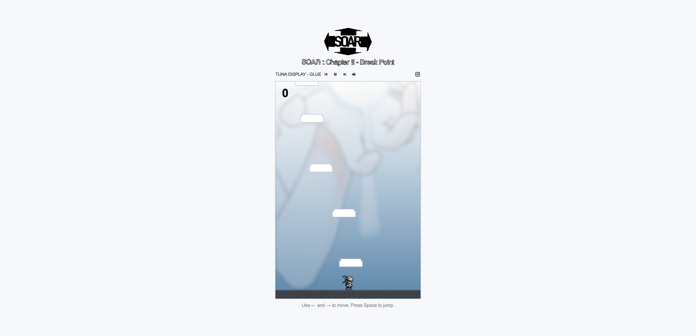

Vertical-scrolling jumper game for SOAR, a Seoul-based event series highlighting local and international artists working with emotive Trance/Ambient music.
Coldfish Technologies is run by Sky Yoo (유새결).

Vertical-scrolling jumper game for SOAR, a Seoul-based event series highlighting local and international artists working with emotive Trance/Ambient music.